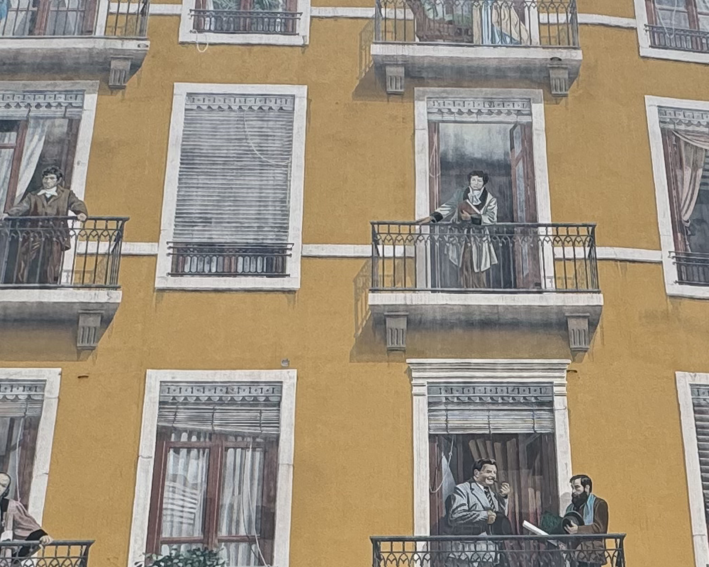
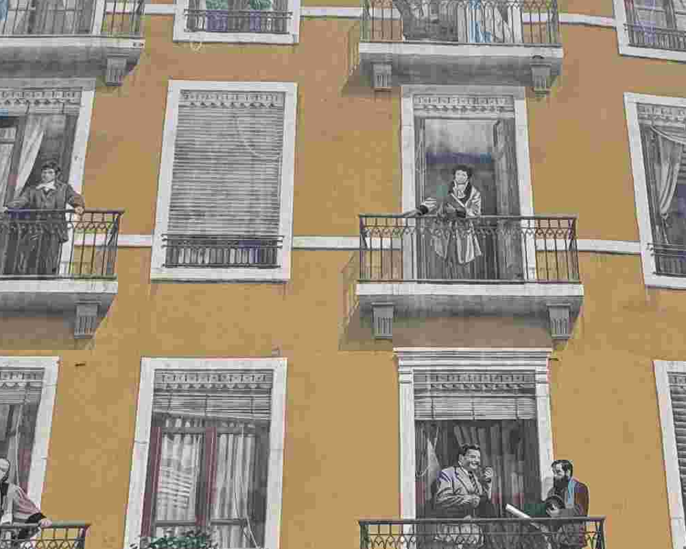

<!-- .slide: class="smaller" --> ## Image comparison: file index **Fresque des Lyonnais — same photograph, six encodings (4032 × 3024 pixels)** 1. [01_full_lossless.png](images/01_full_lossless.png) — PNG 2. [02_full_lossless.tif](images/02_full_lossless.tif) — TIFF 3. [04_jpeg_q90.jpg](images/04_jpeg_q90.jpg) — JPEG 4. [04_jpeg_q50.jpg](images/04_jpeg_q50.jpg) — JPEG 5. [04_jpeg_q10.jpg](images/04_jpeg_q10.jpg) — JPEG 6. [10_jpeg2000_lossless.jp2](images/10_jpeg2000_lossless.jp2) — JPEG 2000 *Click a filename to open/download it. Some browsers cannot display TIFF or JP2 directly.* --- ## First impressions - Which files were biggest and smallest? - Which looked different **at normal viewing size**? - What changed when you **zoomed in**? - Did every file open in your usual software? **Keep separate:** pixel dimensions, file size, visible quality, and compatibility. --- ## What was actually supplied? | File | Encoding | Approx. size | |---|---|---:| | `01_full_lossless.png` | PNG / lossless DEFLATE | 12.2 MiB | | `02_full_lossless.tif` | TIFF / lossless LZW | 29.3 MiB | | `04_jpeg_q90.jpg` | JPEG / lossy, quality 90 | 2.5 MiB | | `04_jpeg_q50.jpg` | JPEG / lossy, quality 50 | 1.0 MiB | | `04_jpeg_q10.jpg` | JPEG / lossy, quality 10 | 0.4 MiB | | `10_jpeg2000_lossless.jp2` | JPEG 2000 / lossless | ~14.8 MiB | All six: **4032 × 3024 pixels**. File sizes are approximate; encodings differ. --- <!-- .slide: class="small" --> ## PNG: lossless compression  - Uses **DEFLATE** lossless compression. - Preserves the pixel values of the decoded source. - Smaller than this particular LZW TIFF—not a universal rule. --- ## TIFF: lossless, but compressed - This TIFF uses **LZW** compression. - **Lossless ≠ uncompressed.** - TIFF can also be uncompressed, use other lossless methods, or even contain lossy JPEG data. - Good preservation candidate, but format **and encoding settings** matter. [Open the TIFF](images/02_full_lossless.tif) (browser support varies) --- ## JPEG quality 90: access-friendly <!-- .slide: class="small" -->  - Much smaller than PNG/TIFF. - Lossy: some information is discarded. - At normal size, differences may be difficult to notice. - Useful for many web-access images, **not** a substitute for an original capture file. --- <!-- .slide: class="small" --> ## JPEG quality 50: inspect closely  - Lower file size, stronger compression. - Look around **edges, fine lettering, railings, and textures**. - Artifacts become easier to see when zoomed in. --- <!-- .slide: class="small" --> ## JPEG quality 10: the tradeoff becomes visible  - Very small file relative to the lossless versions. - Look for **blockiness, smearing, and halos around edges**. - Still 4032 × 3024 pixels: **pixel count alone does not measure quality**. --- <!-- .slide: class="smaller" --> ## Same detail, different JPEG settings <div class="three-images"> <div><p></p><p>Reference (PNG)</p></div> <div><p>JPEG Q50</p></div> <div><p></p><p>JPEG Q10</p></div> </div> These are matching crops enlarged **3× with nearest-neighbor scaling** for inspection; enlargement does not restore detail. --- ## JPEG 2000: lossless JP2 - This `.jp2` uses **lossless JPEG 2000** compression. - Decoded pixels match the full-resolution PNG exactly. - JPEG 2000 can also be **lossy**; the extension alone doesn't tell you. - Strong technical capabilities, but **less consistent software/browser support**. [Open/download 10_jpeg2000_lossless.jp2](images/10_jpeg2000_lossless.jp2) **Question:** Does a preservation-worthy format also have to be easy to display in a browser? --- ## Why are lossless files different sizes? - PNG uses **DEFLATE**. - Our TIFF uses **LZW**. - Our JP2 uses **lossless JPEG 2000**. - All can represent the same decoded pixels exactly. - Compression effectiveness depends on the algorithm, settings, and image content. **Different file sizes do not necessarily mean different image quality.** --- ## Preservation master vs. access copy **For a new digitization project:** - **Master:** preserve the highest-quality capture, often TIFF (uncompressed or losslessly compressed), with technical metadata. - **Access:** deliver an appropriately sized JPEG or other web-friendly derivative. - **JP2:** possible preservation/access role where institutional systems support it. **Important caveat about our example:** the camera original was **HEIC**, already lossy. Converting it to lossless TIFF/PNG/JP2 **does not recover discarded detail**. Preserve the original HEIC too. --- ## What did we learn? 1. **Lossless** does not mean **uncompressed**. 2. All six have the **same pixel dimensions**, not the same visual quality or file size. 3. JPEG quality settings affect **artifacts and file size**. 4. A file extension does not always reveal **compression type**. 5. **Compatibility and institutional workflows** matter alongside technical quality. **Return to the activity:** Which would you choose for preservation and web access—and why?